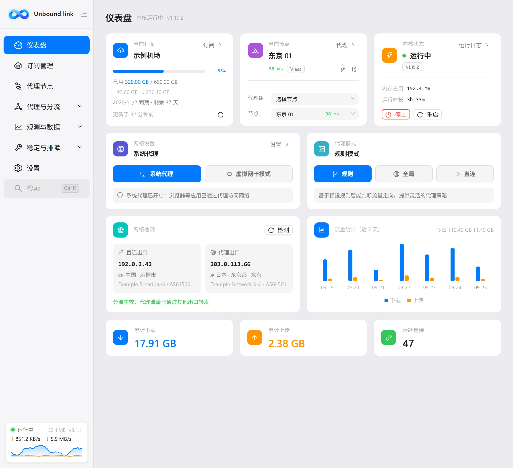
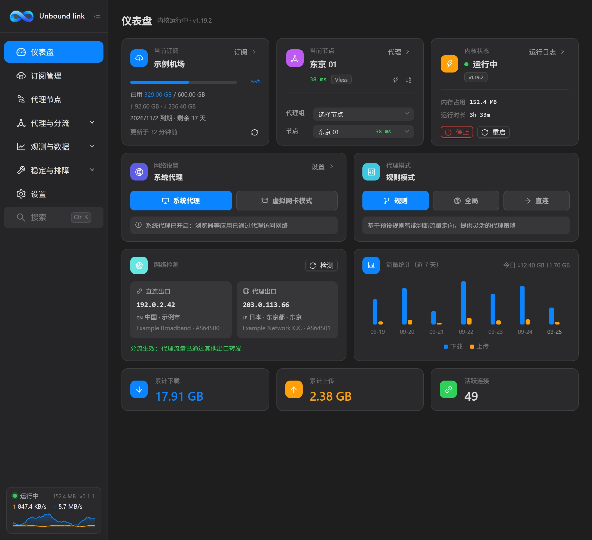

使用手册
仪表盘
仪表盘是打开客户端后的第一屏，用来一眼看清整体状态，并直接切换代理组与节点。


这一页解决什么
它的定位是「总览」：确认内核有没有在跑、当前流量是否正常、当前用的是哪个节点。日常使用里最常做的两个动作——判断是否已连上、临时换一条线路——都可以在这一页完成，不必进入「代理节点」页。
内核状态
页面顶部是内核状态卡片，显示内核是否运行，以及内核版本、内存占用、运行时长等信息。这些数值由客户端从内核读取，供你判断后台进程的健康状况。左侧边栏底部还实时显示「内核内存」与「应用内存」两项占用，不进入本页也能随时查看。
- 运行中：内核正在工作，代理能力可用。
- 未运行：内核没有跑起来，此时系统代理与节点都无法生效。
流量区
流量区给出三项概要数据，并配一条实时流量曲线：
| 项目 | 含义 |
|---|---|
| 累计下载 | 本次内核运行以来接收的总流量。 |
| 累计上传 | 本次内核运行以来发送的总流量。 |
| 活跃连接数 | 当前正在进行的连接条数，可跳到「实时连接」查看明细。 |
| 实时流量曲线 | 上下行的即时速度走势，数据来自内核的 WebSocket 推送。 |
曲线动起来才算在传数据
打开一个网页或视频时，曲线应出现波动，累计下载数值随之增长。
切换代理组与节点
仪表盘下部是代理组 / 节点切换行。每个代理组都有一行，可以直接在仪表盘为它选定当前节点：
- 点开某个代理组的下拉框，选择要用的节点，改动立即生效。
- 需要测速、收藏或做更细的筛选时，再前往「代理节点」页。
一个订阅里通常有多个代理组，例如「选择节点」「自动选择」之类。你在仪表盘切换的是该组当前使用的节点；如果组本身设置了自动策略，它会自行挑选，手动选择会覆盖自动结果。
常见用途
| 想做的事 | 在仪表盘怎么看 / 怎么做 |
|---|---|
| 确认是否已连上 | 看累计下载 / 上传是否有数值并随上网增长，并确认当前节点延迟显示为数字。 |
| 临时换一条线路 | 在对应代理组的下拉框里选另一个节点即可，不需要离开本页。 |
| 确认内核是否正常 | 看内核状态卡片是否为运行中，以及运行时长是否在正常累计。 |
内核显示未运行时
先到「设置」确认「自动启动内核」已开启；若开关正常但内核仍未运行，去「网络体检」定位问题。